Simple Higher Order Functions in Swift 3 (Map, filter, reduce and flatMap)!
In this blog post, I will be talking about Swift's powerful and most useful functions known as higer order functions which you can use on collection types. Simply saying, higher order functions are fumctions that you can pass as argument to other functions. It might seem confusing at first but I will try my best to clarify the things using examples below. Without further a due lets dive in.
Map
Loops over a collection and applies the same operation to each element in the collection.
Let’s assume we need to multiply each item by 2 in an array called numberArray. One approach can be:
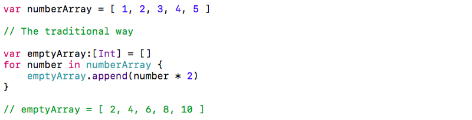In this example above, you made an empty array called emptyArray that holds integer values, looped through the original array, multiplied each element by 2 and appended them to the emptyArray.
Now, let’s use map for a comparison!
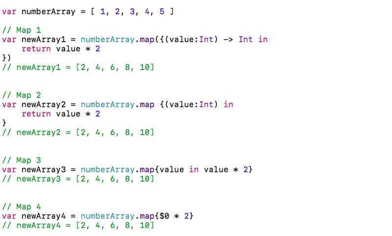In these examples above, map accepted a closure (a.k.a a first class function that can be passed around and used in code) as an argument and returned the exact same results as if we used a for loop!
“Wait,” you might say — “Map 1 to 4 look different! Aren’t they all map? Why are they written differently?”
The answer is: YES! They are all the same. It’s just a matter of long-form vs shorthand closure syntax preference.
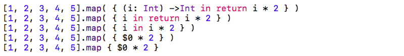Filter
Loops over a collection and returns an array that contains elements that meet a condition.
ILet’s assume we need to filter even numbers only in the following array example. The traditional approach can be:
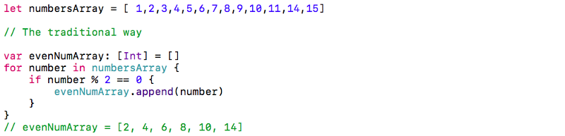Instead, let’s use filter for the same result:
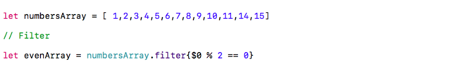THow simple was that! Filter just eliminated the need of creating an empty array that holds the results, but also takes up valuable computing memory. One line of code — the same exact result!
Reduce
Combines all items in a collection to create a single value.
Let’s assume we need to get the sum of all the numbers in an array of integers. One solution would be to implement another For-In loop:
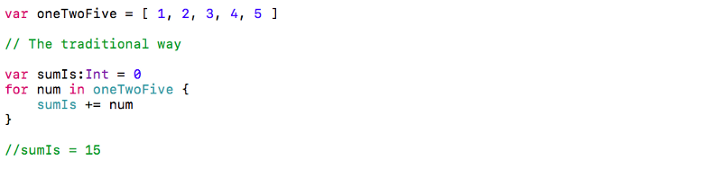Now let’s use reduce for the same result.
The two parameters in reduce function are a starting value and a function respectively. The function takes a running total and an element of the array as parameters, and returns a new running total.
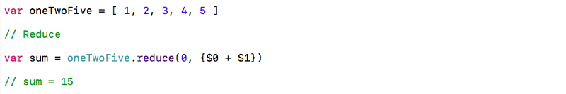Again, one line of code — the same result!
Despite the odd syntax, the addition of two adjacent values is taking place between the {} brackets, and the sum is then added to the 0 on the left.
there is an easier way to write this!
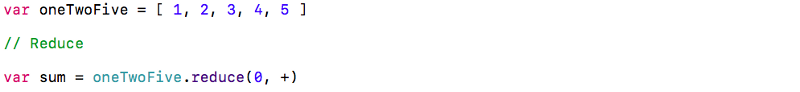In the last example, the + operator is substituted for the {$0 + $1} closure, creating an even more simplified and accessible syntax.
Interestingly, the same rule applies to string arrays as well:
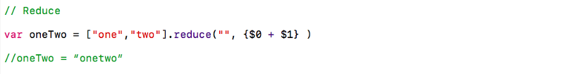FlatMap
When implemented on sequences : Flattens a collection of collections.
Say we have two arrays within an array that we would like to combine into a single array. How would we accomplish this? Probably with another For-In loop:
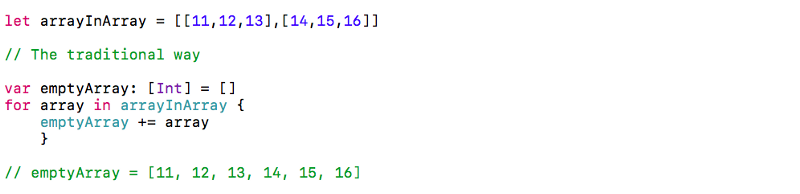Not this time, flatMap to the rescue!
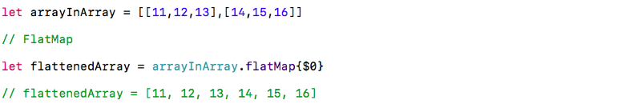Implemented on optionals : Removes nil from the collection.
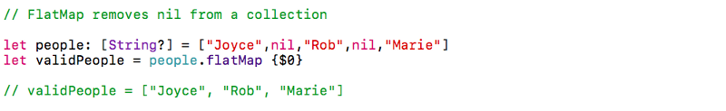Chaining
This is when Higher Order Functions truly shine. You can combine all those HOFs you’ve just learned in one line of code!
Let’s say we want to add the squares of all the even numbers from an array of arrays.
Rather than writing a bunch of for loops and if conditions, we can instead use HOFs to simplify our code and get the same results.
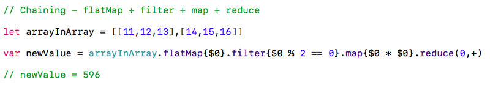Now, let’s show that the Ints represent money by inserting a $ in front of every element in the arrayInArray example using flatMap and map.
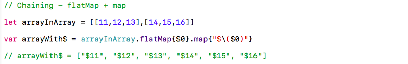Just one line of code with an awesomely powerful result!
So Why to Use Higher Order Functions?
As you might have noticed, that the amount of effort and time is much lesser if we adapt ourselves to use higer order functions. Not only efforts it makes our code readable and shorter. These simplistic examples above sum up the reasons why we should use higher order functions in place of more commonly used methods. They help us:
Read and understand complex functional programming
Write more elegantly and maintainable code that has better readability
Improve our Swift language skills
This was just a brief introduction. Hopefully it will help new Swift Developers who has just started their journey. Functional programming is something that takes a long time to get used to, and understanding and harnessing its power takes a lot of time and practice. So be Patient Read Articles and write functional code as much as you can.